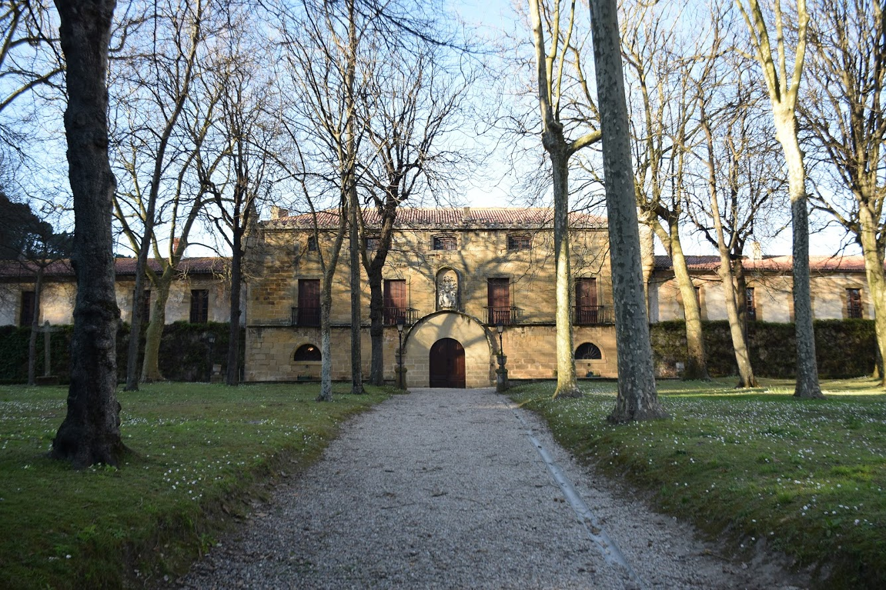
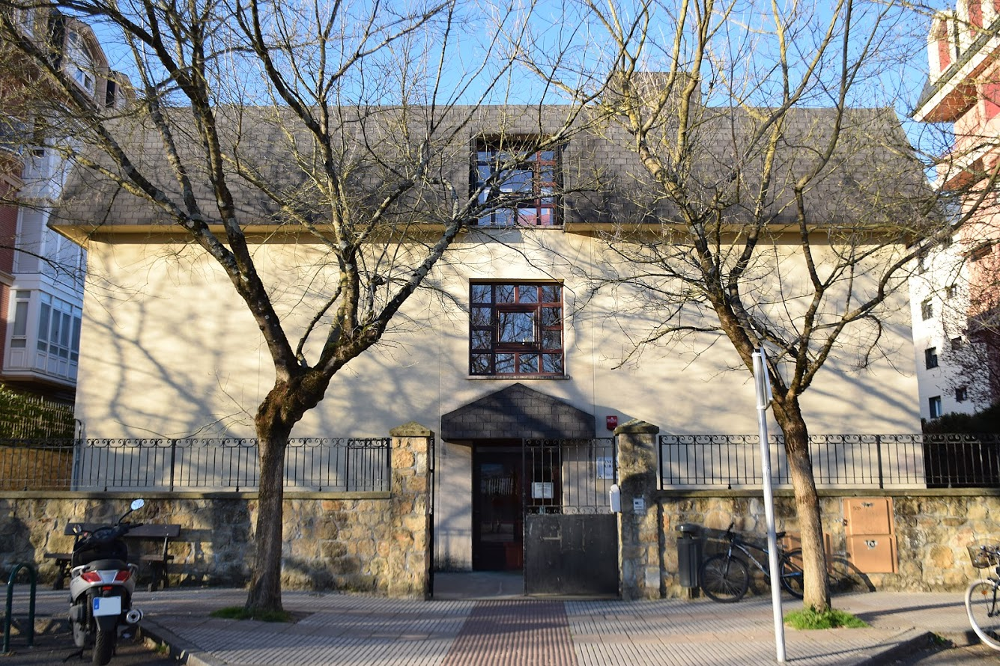

Ibilbidea
Ibilbidearen hasiera eta bukaera, Salbatore Mitxelena ikastolan. Helburua: herriari bira bat ematea, kultura-gune eta toki interesgarriak ikusiaz.
 1. arg.
1. arg.
Irteera Maria Etxetxiki kalean, Salbatore Mitxelena ikastolaren aurrean (1. arg.). Ikastolaren ondoan alde batetik “Bertsolaritzari omenaldia” izena duen Jorge Oteitzaren eskultura bat (2. arg.) eta Iñurritzako ermita (3. arg.) dauzkagu.
Maria Eizagirre “Maria Etxetxiki” Zarautzen jaio zen 1886. urtean Añurbe baserrian, eta Etxetxiki baserrira ezkondu.
Zarautzen kale horrek bakarrik du emakume baten izena. 11 seme-alaba izan zituen. 21 urterekin hasi zen emagin-lanetan, eta bizitza guztia eman zuen lan horretan. Baina ez hori bakarrik: 11 seme-alaben arduraz gain, besteak beste, injekzioak jartzen zituen, hilzorian zeudenak zaindu, San Pelaioko ermita zaindu eta etxeko baratzean jarduten zuen.
«Iñurritza» eta «Abendats» ezizenez ezaguna, Zarautzen jaio zen 1919an, eta euskal olerkaria izan zen. Apaiz frantziskotarra zela, Frankismo garaian Espainiako Eliza ofizialak jarraitzen zuen ildoarekin ados ez zegoenez eta hizkuntzaren eta hiztunen egoera itota ikusten zuenez, bere burua misioetara erbesteratzea erabaki zuen.
Mitxelenaren idazlanak euskararekiko eta Euskal Herriarekiko samin arduraz beterik daude eta bere olerkigintza bertsogintza tradizionaletik oso hurbil dago.
Jorge Oteizaren eskultura. Burdina.
Jorge Oteiza, (Orio,1908) eskultore eta arte-teorialaria izan zen. XX. mendeko euskal herritar eskultorerik garrantzitsuena da, eta bere itzala mundu guztira zabaldu da, XX. mendeko bigarren erdiko abangoardia artistikoetan izan baitu eragina, baita Euskal Herritik kanpo ere, esperimentazioarekin eta arteak gizartea eraldatzeko duen ahalmenarekin erabat konprometitutako sortzaile gisa. Espazioari buruzko gogoetan oinarritu zuen bere lana: bolumenaren eta espazioaren arteko analisia irudi karratuen eta esferen bidez; espazioaren hustuketari buruzko ikerketa.
Eraikina J.J. Belaunzak altxatu zuen 1850. urtean. Habearte bakarreko gurutze latindar oina du. Sarrera mendebalderantz orientatuta dago, eta estilo neoklasikokoa da. Frontoiari eusten dioten lau koloma doriko ditu.
1979. urtean berritu zuen Xabier Egañak, eta barrua berriz apaindu zuen, horma-irudi piktoriko-eskultoriko batez. Erdiko eskultura Tomas Murua artistak egin zuen. Horrez gain, barruan Hilario Zabaletaren XVII. mendeko irudiak daude; bata Santuarena, eta bestea Aingeru Guardakoarena.
Ikastolatik hondartza aldera joango gara Maria Etxetxiki kaletik. N-634 errepidea gurutzatu eta golf-eko paretik, Mendilauta kaletik, Desertu-txikira iritsiko gara. Han Aiala haundi-txiki dago, XX. mendeko txaleta, egun Karlos Argiñanoren jatetxea (4. arg.).
 4. arg.
4. arg.
Zenbait estilotako elementuak erabili ziren eraikina egiteko. Esate baterako, bao zorrotzak, garitoiak (eraikin baten goiko aldeko angelu batetik ateratzen den dorrea), erdi-puntuko arku-bikiak, leiho konopialak edo ezkerreko dorreko almenatua. Nostalgia-ukitua du.
Goitik behera zaharberritu zen 1990. urtean, jatetxe-hotela bihurtzeko. Iparraldeko atala, alegia jatetxea dagoen beheko solairua, erreforma horretan eginiko eranskina da.
Ondoren, itsasertzeko pasealekutik joango gara, bidean topatuko ditugun eskulturak ikusiaz (5. arg.)
 5. arg.
5. arg.
Dora Salazar. Itsas Pasealekua. Eskultura-Lehiaketa. 1. saria. Brontzea.
Hiru piezaz osaturiko proiektua da. Hasiera batetan barruko espazio batean jartzekoa zenez, eskala txikiagoan egiteko pentsatuta zegoen. Hiru piezek itsas izaerako erreferentzia nabarmenak dituzte. Oskolen, moluskuen, anforen eta itsasoan bizi diren izaki organikoen irudietan oinarritzen dira. Eskultore nafarrari ez zaizkio izugarrizko neurriak interesatzen, nahiago baitu harreman gizatiarragoa sortzea, piezak aurkituz, begiei inposatu gabe, eta naturalaren (hondartza, itsasoa) eta artifizialaren artean dagoen hiri baten arteko lotura eginez. Piezen itxura itsasaldekoa den arren, ikuspegi teknikotik eraikuntza artifizialak dira, eta zorutik sortzen dira, izaki mekanikoak balira bezala. Bi atal ditu: bata, formari dagokiona, opakua da; eta bestea, egiturari dagokiona, lineala da. Interesgarria da bai barrutik, bai kanpotik. 14 mm-ko lodiera duen altzairuzko hagaxka bat da euskarri nagusia, itsasoari begira dagoen zutabetik ateratzen dena, ez pasealekuaren zorutik. Errematxeekin mihiztatutako modulu hutsez osatuta dago pieza.
Bañeru kalera iristean gora egingo dugu N-634 errepideraino, eta ondoren eskuinera, Munoaraino. Plaza honen ondoan dago Narros jauregia. Sarrera nagusia ikusi nahi badugu, N-634 errepidera joango gara, eta gero metro batzuk eskuinera, espaloitik (6. arg.).
6. arg.XVI. mendea.
Erdigunea lurraren desnibelari egokitutako eraikin bat da. Sotoa du iparraldean, eta beheko solairua eta bi solairu garai. Aurrealde nagusian, erdi-puntuko arkuaren itxura duen portalea dago, dobelekin eta moldura handi batez inguratua.
Garitoiak (eraikin baten goiko aldeko angelu batetik ateratzen diren dorreak) eta pinakuluak ditu (dorre zorrotz txiki baten itxura duten akaberak), garai bateko dorretxeen oroitzapen estetiko gisa. Almenadun apaingarri batez errematatutako harrizko erlaitza ere badu. Juan Ortiz Ganboakoak eraiki zuen, familiaren dorretxe zaharretik gertu. Dorretxe zahar hori desmuntatu egin zen, eta hango materialak jauregi berria eraikitzeko aprobetxatu zituzten. Gune horrek jauregi errenazentista osatzen du, alboetako atalak gerora egin ziren eranskinak baitira (1845). Atean, familiaren armarri handi bat ageri da, eta, bertan, Zarauz inskripzioa agertzen da, familiaren abizenaren antzinatasunari erreferentzia egiten diona, nahiz eta Santa Maria La Realeko indusketa-lanek frogatu duten Zarauz familiaren aurretik bazegoela herrigune bat.
Jauregiko sarrera ikusi ondoren, lehengo bidetik ekingo diogu, eta lehenengo zebra-bidea aprobetxatuz errepidea igaro, eta Musika plazara joango gara. Musika Plazan Makazaga (Makatza) etxea daukagu (7. arg.)
7. arg.XV-XVI. Mendeak. Dorretxea.
Estilo gotikoko hiri-etxe gotortu hori inguruko eraikin bakarra zen jatorrian. Zarautzek zenbait dorretxe izan omen zituen babesteko. Makazaga etxeak, hain justu, funtzio hori zuen hiriaren hegoaldeko sarreran, nahiz eta ez izan dorretxe bat zentzu hertsian esanda.
Beheko solairuan, ojiba-arkua duen sarrera bat ikusten da. Aldiz, goiko solairuak adreiluz eta egurrezko egituraz eginda daude. Baoak eta aurrealdearen kanpoko itxura aldatu egin dira denboran zehar, eta atzeko eta alboetako fatxadetan iraun dute hobekien eraikinaren XVI. mendeko jatorrizko ezaugarriek: leiho konopialak, gezileihoak, gargolak (teilatuetako ura isurtzeko ubideen azken zatia), etab. Fatxadako ezproi solidoek (alboko kontrahormak) eusten zioten egurrezko hegalez osatutako egiturari, fatxadan ateratzen diren zenbait modiloitan (hegal baten pisua eusteko pieza) ezartzen dena.
Musika Plazaren eskuinaldera joango gara ondoren, eta han Zarauzko parrokia aurkituko dugu (8. arg.)
8. arg.XV. Mendea. Parrokia / Aztarnategia.
Eliza gotikoa Zarauz familiaren laguntzari esker eraiki zen. Jatorrian habearte bakarra zuen, baina XVI. mendean bi kapera gehitu zitzaizkion alboetan, eta gaur egun duen gurutze latindarraren itxura eman. XVII. eta XVIII. mendeetan egin ziren eranskinei dagozkie elementu asko. Barruan, Santa Maria La Real aztarnategiaren zati handi bat dago; aztarna horiek Zarauzko historia erakusten dute, K.a. V. mendetik gaur artekoa.
Elizaren mendebaldeko horman, beiratea duen arrosa-leiho bat dago.
Parrokiako zaharberritze-lanek Burdin Arotik Aro Modernora arte doazen okupazio-mailak bistaratu zituzten. Burdin Aroko espazioan, sutondoa duen gela karratu bat ageri da.
Erromanizazio garaiko Gipuzkoako aztarnategi garrantzitsuenetariko bat dela esan eta dokumenta dezakegu, kalitate handiko eraikuntzak baitaude, Aroaren bukaeratik K.o. V. mendera arte doan okupazio-kronologian.
Erdi Aroari dagokionez, badago hiru mailako nekropoli bat: zaharrena IX-X. mendeetakoa da, eta hormako hilobiei dagokie; bitarteko fasearen (XI-XII) ezaugarria da harlauzadun hilobiak izatea. Azken fasean, XIII-XIV. mendeetan, harlauzadun hilobiak gutxitzen direla ikus daiteke, hilobi sinpleen mesedetan. Egungoaren aurreko hiru tenplu kristauren inguruan kokatuta egongo litzateke nekropolia, parrokian egindako indusketetan ikusi zenagatik. Haien gainean eraiki zen gaur egungo egitura.
Parrokiara iristean ezkerretara egingo dugu San Inazio kaletik gora, Manuela txaletera, gaur egun bertan baitago Photomuseuma (9. arg.).
 9. arg.
9. arg.
XIX. mendea.
Eraikin hori Bernardino Birmingham Echagüek aginduta eraiki zen.
Gaur egun, Photomuseuma kokatzen da bertan.
Eraikinak ideia trinko eta bateratu bati erantzuten dio. Apaingarririk gabeko prisma angeluzuzena duen bloke bat da. Baoen eta fatxadaren konposizio orokorraren arteko simetria perfektua da.
Photomuseum- Argazki & Zinema Museoa. Bere xedea da ikertzea eta hedatzea bai arte eta teknika fotografikoa, bai zinemagintzaren hastapenak.
1993ko irailean ateak zabaldu zituenetik, argazkigintzaren historia azaltzen du hiru gidalerroei jarraituz: lehena, argazkigintzaren garapen teknikoa; bigarrena, irudi fotografikoek komunikatzeko tresnatzat duten balioa; eta hirugarrena, argazkigintza arte alorrean. 2006az geroztik erakusketa iraunkorra zinemagintzaren hastapena jorratzen duten material interesgarriekin osatu da.
Erakusketa iraunkorrean hainbat objektu azaltzen dira kronologikoki eta didaktikoki pre-fotografiatik hasita egundaino. Gainera, orotariko teknikak eta arte-mugimenduak lantzen dituzten zenbait aparteko argazkilari lanak aurkezten dira.
Bizkaia kaletik behera joango gara, eta bigarren biribilgunera iristean, ezkerretara joango gara Foruen kaletik, Lege-Zaharren enparantzaraino. Hemen Portu etxea ikusiko dugu, gaur egungo Udaletxea (10. arg.)
10. arg.XVIII. Mendea.
Portu Etxe jauregia. Orube horretan kokatu zen Aiatik zetorren Portu familia XVI. mendean. Merkataritza- eta ekonomia-sareetan aritzen ziren familia garrantzitsuenetariko bat zen. Gerora, eraikin horrek jaso zuen Zarauzko salestarren lehen eskola, eta gaur egun Zarauzko Udaletxea kokatzen da bertan.
Estilo barrokoko hiri-palazioa da, baina elementu klasikoak ere baditu. Konposizio simetrikoa du, bi pilastra jonikok markoztatuta eta hiru bao ditu solairu bakoitzean.
Erdiko balkoia eusten duten koloma ildaskatu klasikoek markoztatutako ate handi bat da sarrera.
Udaletxe aurretik eskuin aldera joango gara, eta lehenbiziko bidegurutzean ezkerretara hartuko dugu, San Frantzisko kaletik Kale Nagusiraino. Kale Nagusian barna Torre Luzea (11. arg.), eta Basarri (12. arg.) eta Lizardiren (13. arg.) bustoak ikusiko ditugu, azken bi hauek Torre Luzea parkearen barruan.
11. arg.XV. mendea. Dorretxea.
Beheko solairuan, ukuiluak eta upategiak zeuden lekuan, dobelaz eginiko arku zorrozdun sarrera dago oraindik ere fatxada nagusian, eta ojiba-atexka bat atzeko fatxadan. Halere, jatorriz, itxitako planta omen zen; sarrera nagusia lehenengo solairukoa izanik, hormari itsatsitako eskailera batetik igotzen zen. Iparraldeko fatxadako lehen solairuan, jasotako atexka bat dago, eta bertara egurrezko eskailera batetik heltzen da. Solairu nagusian, sukaldea zegoen, eta sutondoaren hondarrak ikus daitezke bazter batean. Halaber, hormaren lodieran txertatuta, Erdi Aroko komun bitxi bat dago.
Luzea dorrea babeserako euskal arkitekturaren adibide garbia da, eta gotiko zibileko onenetariko bat. Lodiera handiko hormetan, zenbait gezileiho egin zituzten, eraikin barrura argia sartzeko. Goiko aldean, bi ezproi (alboko kontrahormak) ikus daitezke, kadaltsoak (egurrezko bastioi edo gotorlekua) edo egurrezko egiturak eusteko izango zirenak. Mentsuloiek (hegalen pisua eusteko piezak) lau fatxadak errematatzen dituzte.
Bigarren solairuan, bai fatxada nagusian, bai atzekoan, bi ojiba-atexka daude, gotorlekura dorre barrutik sartzeko.
Zarautzek ez zuen harresirik izan, baina zenbait dorretxek babestuta egon zen. Esaterako, Luzea dorreak eta Laburra dorreak hiriaren ekialdeko sarrera defendatu zuten inguruan eraikinik ez zegoen une batean. Bi dorretxe horien artean zegoen Orioko eta Donostiako bideekin bat egiten zuen irteera. Halere, babeserako eginiko eraikina izan arren, haren funtzio estetikoa ez zen baztertu, eta leiho handi bikiak ireki ziren, arku trilobulatuz eta mainelez apaindurik. XV. mendearen erdialdean, Enrique IV.ak dorretxea babesteko elementuak ezabatzeko agindua eman zuen. Ziur asko, jauregi-itxura izateari esker ez zuten bota Luzea dorrearen goiko aldea.
Basarriri omenaldia. Palmiro Haro. Brontzea eta harria.
"Basarri" bertsolaria irudikatzen duen brontzezko bustoa. Eskultura zilindroerdi batean zizelkatuta dago, leundu gabeko marmolezko idulki baten gainean. Idulkiak moztutako piramide baten itxura du.
Inazio Eizmendi, “Basarri” izenez ezaguna, bertsolaria, kazetaria eta euskal idazlea izan zen. XX. mendeko bertsolaritzaren ordezkari nagusienetako bat kontsideratuta dago.
Euskal Herriko Bertsolari Txapelketa Nagusia birritan irabazi zuen, 1935 eta 1960an.
Lizardiri omenaldia. Mikel Campo / Marian Aranburu. Brontzea eta harria
Konposizio bertikal horrek lau bolumenen arteko ainguraketa baten itxura du. Neurrian handitzen doazen globoen forma dute lau bolumen horiek, eta burdinazko esparrago batekin lotuta eta estututa daude.
Jose Maria Agirre, Xabier Lizardi goitizenez, euskal idazlea izan zen, batez ere olerkaria. Euskaltzaleak elkartea sortzen lagundu zuen, eta bere garaiko ekintza kultural eta politikoetan parte hartu. Esteban Urkiaga Lauaxeta eta Nicolas Ormaetxea Orixerekin batera, bere aroko olerkari hoberena dugu. Biotz-begietan,1932an argitaratuta, kritikariek oso aintzakotzat hartu zuten.
Gerra Zibilaren aurretiko olerkari lirikorik behinena, izadiaren —izadi edertuaren— olerkaria izan zen. Lizardiren prosa haren poesia bezain originala da. Itz Lauz izeneko bilduman lehen mailako idazle, estilo pertsonal eta moderno baten jabe ageri da.
Torre Luzea parketik barrena, N-634 errepidera iritsiko gara berriro. Hartu eskuinera eta Frantziskotarren komentura iritsiko gara (14. arg.). Eraikin horren ezkerraldean dago Salbatore Mitxelena ikastolaren lehenbiziko eraikina (15. arg.).
14. arg.Elizak, komentuak eta eskolak osatutako multzoa da.
Komentua 1610ean sortu zuen Juan de Mancisidor Jaunak.
Konbentzio gerran (1794), frantsesek erabili zuten ospitale eta biltegi bezala, eta gero arpilatu egin zuten, eta sortzaileak Flandesetik ekarritako erlikia ugari eraman. Berritze-lan ugari egin dira eta, ondorioz, oso zaila da arte-estilo batean sailkatzea. Gurutze latindarreko hiru planta ditu, eta hiru habearte. Habearte nagusia albokoak baino zabalagoa eta luzeagoa da. Aldamenekoak hainbat neurritako zutabe angeluzuzen handiez banatuta daude.
Eliza barruan, Flandeseko erlijio-triptiko bat ikus daiteke, Antonio Blocklandtek 1577an egina, eta erretaula nagusia, J. Ruiz de Larrinagak 1828an sortua.
Badu liburutegi garrantzitsu bat.
Komentuaren aurrealde nagusiaren aurreko plazan, hareharriz eginiko gurutzekari bat dago. Gurutzekari horren aurrealdean, Jesus Gurutzatuaren irudia dago, eta atzealdean Ama Birjinarena, Haurra besoetan duela.
Liburutegi aberats baten jabe zen kolegioa, garai hartako prediku- eta espiritualitate-liburu ugarirekin, euskal literaturako original argitaragabe biziki baliotsuekin batera. Horrela, esate baterako, Etxeberri Sarakoa, Joan Antonio Mogel, etab.en lanak.
1964an guraso talde bat bildu zen herrian eskaintzen ez zen heziketa modu desberdin bat beraien seme-alabentzat antolatu nahian. Garai hartan Zarauzko ikastetxe guztiek heziketa gaztelera hutsean eskaintzen zuten. Guraso talde horren nahia izan zen eskola euskaldun eta kalitatezko batean seme-alabak heztea.
Zeregin horretarako ahoz-aho zabaldu zuten herritar euskaldunen artean, batik bat, eskola berriaren ideia, proiektu hartara ahalik eta guraso eta, ondorioz, haur kopururik handiena bil zedin.
Bestalde, leku aproposok samarra ere behar zen haur haien hezkuntzari egunerokotasunean erantzun ahal izateko. Horretan, zorte handia izan zuten: Fraide Frantziskotarrek utzi baitzieten elizaren atzeko aldean dagoen eraikuntza txikia ikastola gisa erabiltzeko. Ikasle kopuru handia lortu zuten jada hasiera-hasieratik: 120 ikasle.
1965eko udazkenean ireki zituzten ateak pozik eta itxaropentsu Salbatore Mitxelena ikastolak. Izena, agian, fraideei eskainitako esker oneko keinua izango zen, Salbatore Mitxelena herriko fraide olerkari eta euskaltzale entzutetsua baitzen.
Errepidearen ondotik joango gara Villa Mundaraino. Etxea aurrean kokaturik dauden bi lehoien irudiak erakutsiko digu iritsi garela (16. arg.). Villa Mundako parke barruan Francisco Escuderoren omenezko eskultura dago (17. arg.)
16. arg.XIX. Mendea. Jauregia.
Gaur egun musika-etxea den palazioa lorategi batez inguratuta dago. Hilerri zaharreko lurretan eraikitzeko agindua Pedro Gonzalez Velascokoa doktore jaunak eman zuen, bera izanik historiak eman duen anatomistarik handienetarikoa eta Antropologiako Museo Nazionalaren sortzailea. 14.500 erreal ordaindu zituen, eta gorpuak hobitik ateratzeak eta egungo hilerrira eramateak ekarri zituen gastuak gehitu behar zaizkio kopuru horri. Diotenez, etxearen jabeak hildako alaba baltsamatu, eta paseatzera ateratzen zuen.
Sanz Enearekin batera Zarautzen geratzen diren XIX. mendearen amaierako udaldiko jauregien adibide bakarrenetarikoa da, nahiz eta garai hartatik hona aldaketak izan dituen. Esaterako, hegoaldeko fatxadan, “U” formako patio txiki bat osatzen duten beste bi atal ageri dira, garaiera gutxiagokoak; atal horiek eraikina egin eta gero erantsi zituzten.
Escudero maisuari omenaldia. Palmiro Haro. Brontze
Francisco Escudero zarauztar musikagilea zen.
Donostiako Musikaren Udal Ikastegian hasi zen musika ikasten beranduago Madrilen amaitzeko. 1930ko hamarkadan, Parisera joan zen Munich-en amaitzeko. 1937an, Espainiako Arte Ederretako saria jaso zuen, Trío bucólico lanarekin.
1945ean, Bilbora joan zen bizitzera. Bertan, Bilboko Koralaren zuzendari izendatu zuten Escudero. 1947an, Pinceladas vascas piano eta orkestrarako lanarekin saria jaso zuen. 1948an Zarautzera bueltatu zen Donostiako Musikaren Udal Ikastegiaren zuzendari izatera. 1957an, Espainiako Musika Sari Nazionala irabazi zuen Arantzazu eta Evocación en Itziar obrekin.1960an, Donostiako Banda sortu zuen. Bilbon aurkeztutako Zigor opera-lanarekin, berriz ere, Espainiako Musika Sari Nazionala jaso zuen.
Parketik irtetean, Gipuzkoa kalea gurutzatuko dugu. Hartu eskuinera, eta espaloitik tren geltokira iritsiko gara. Jarraitu espaloitik Lapurdi kalean eta metro gutxitara Imanol Urbieta Musika-eskolan izango gara (18. arg.)
18. arg.Imanol Urbieta (edo Manolo Urbieta) musikari eta idazlea zarauztarra izan zen. Teologian lizentziatua, Musikako ikasketak egin zituen Gasteizen, Donostian, Bordelen, Budapesten eta Estrasburgon. Oleskariak koroaren hastapenetan ere ibili zen.
Gehienbat, haurrentzako musika egin izan zuen bere ibilbide guztian, hala nola Txoria nintzela edota Jon Braun abestiak. Xirula Mirularen sortzailea ere bada. 2010eko abenduaren 5ean Argizaiola Saria eman zioten, «umeen euskarazko kantutegiari egindako ekarpenagatik». Zarauzko ikastolan aritu zen bertako zuzendaria ere izanik. Ondoren, musika eskola ireki zuen.
1967an diskoa grabatu zuen, Bartzelonan, Haur kantariak izenekoa, euskaraz umeentzako abestiekin egindako lehen diskoa. Haur Kantarien Birlorak izeneko lau disko egin zituen Salbatore Mitxelena ikastolako haurrekin, Anjel Lertxundi , Joxe Antonio Ormazabal eta Juan Martin Elexpururekin lankidetzan.1979an Xirula Mirula, musika eskola ireki zuen. Lehena Zarautzen sortu zuen, eta ondoren Donostia eta Hernanin ere ireki zituen. Bertan, musikak heziketan zuen garrantziaz konturatuta, 1980ko hamarkadan ikasmateriala ekoitzi zuen, tartean Xixupika, Txalopin txalo eta Lau katu eta Danbor bat liburuak.
Musika-eskola aurrean dagoen zebra-bidetik errepidea pasa eta hartu ezkerretara. Laster iritsiko gara ikastolara.
- Salbatore Mitxelena Ikastolak 50 urte. Arraun eta amets!
- www.gurezarautz.net